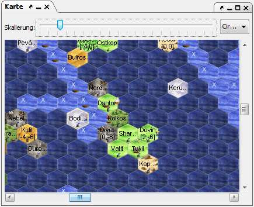

Here the map of the known world is displayed.

When "Fog of War" (FOW) is enabled, regions that do not contain units or have not been traveled through, as well as ocean regions that can not be glimpsed from atop a lighthouse, are displayed darker. This mode can be toggled with shortcut key CTRL-W.
If you click on the map the selected region is opened in the region view. By holding down the mouse button you can pan the map.
Above the map there is a zoombar that controls the magnification of the map. Additionally you might find two drop-down menus here. One for planes, if you happen to have units in several planes, and one that allows you to choose so-called HotSpots. You can add a HotSpot by pressing CTRL-H and entering a name. By doing this you save the current map position and can go back to it at any time through the drop-down menu. If you are at an existing HotSpot, you can delete it by pressing CTRL-ALT-H.
By clicking on a region while holding down the CTRL-key you can select a region, or several with the mouse button held down. This way you can for example select regions to export as a CR. To deselect, click again with the CTRL-key held down.
Rightclicking a region results in a context menu that has the following options: